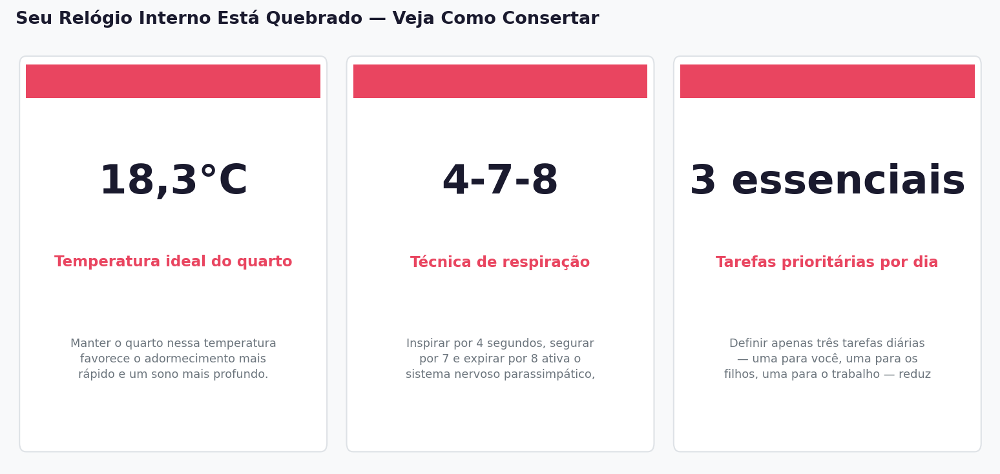

Imagine que seu corpo é uma orquestra: quando o maestro perde o ritmo, cada músico toca no seu próprio tempo, e o resultado é caos. É exatamente isso que acontece quando o ciclo circadiano — o relógio biológico interno que regula sono, hormônios e energia — se desregula. Para mães que vivem entre fraldas, reuniões e listas intermináveis de tarefas, esse caos silencioso pode ser a raiz de um cansaço que nenhuma xícara de café consegue resolver.
O que é o ciclo circadiano e por que ele importa para você
O ciclo circadiano é um ritmo biológico de aproximadamente 24 horas, coordenado por uma pequena estrutura no cérebro chamada núcleo supraquiasmático. Pense nele como um termostato interno que programa quando você deve sentir sono, quando seu metabolismo acelera e quando seus hormônios entram em ação. O problema é que esse sistema é extremamente sensível a mudanças de rotina — e a maternidade é, por definição, uma grande mudança de rotina. Quando o ciclo circadiano é perturbado de forma consistente — por noites mal dormidas, horários irregulares de sono ou excesso de luz artificial à noite — as consequências vão muito além do cansaço. Estudos associam a desregulação circadiana a problemas de memória, alterações de humor, ansiedade, e até maior risco de doenças crônicas como diabetes e depressão. Ou seja: não é frescura, é fisiologia. A boa notícia é que o relógio interno responde muito bem a sinais simples do ambiente — e você pode começar a reajustá-lo hoje, sem precisar de grandes mudanças. Luz solar pela manhã, horários regulares para deitar e acordar, e uma rotina de relaxamento antes de dormir são âncoras poderosas para esse sistema. São pequenos gestos, mas para o seu cérebro, são comandos claros.
Sincronize seu sono com o do seu filho — e peça ajuda sem culpa
Uma das estratégias mais subestimadas para mães é simples: dormir quando o bebê dorme. Parece óbvio, mas a realidade é que muitas mães usam esse tempo para lavar louça, responder e-mails ou finalmente sentar em silêncio com o celular. O problema é que o corpo não acumula repouso — cada hora de sono perdida é uma hora perdida de verdade. Além de alinhar seus cochilos aos do seu filho, observar os padrões de sono dele é uma ferramenta poderosa. Ao identificar em que horários ele costuma adormecer e por quanto tempo dura o cochilo, você pode organizar sua própria rotina em torno desses janelas de descanso. E quanto melhor forem os cochilos do seu bebê — em qualidade e previsibilidade — mais flexível e descansada pode ser a sua noite. Dividir as tarefas noturnas com o parceiro ou parceira não é um pedido de ajuda: é uma decisão de saúde. Pedir que alguém nina o bebê após a amamentação ou troque uma fralda de madrugada não diminui ninguém — pelo contrário, protege a saúde mental de quem cuida. Afinal, mãe descansada cuida melhor.
Crie sinais claros para o seu corpo: é hora de dormir
O corpo humano não muda de marcha instantaneamente — ele precisa de uma rampa de desaceleração. É por isso que criar uma rotina de relaxamento antes de dormir é uma das recomendações mais consistentes da ciência do sono. Pode ser uma respiração lenta (a técnica 4-7-8 — inspire por 4, segure por 7, expire por 8 — é surpreendentemente eficaz), um chá de camomila, leitura leve ou alongamento suave. O ritual não precisa ser longo: 15 a 20 minutos já são suficientes para sinalizar ao cérebro que chegou a hora. O ambiente também faz parte desse sinal. Apagar as luzes do quarto antes de dormir não é apenas uma questão de conforto — a escuridão dispara a produção de melatonina, o hormônio que induz o sono. Da mesma forma, evitar telas nesse período e manter a temperatura do quarto em torno de 18°C cria condições físicas favoráveis para um sono mais profundo e reparador. E uma dica bônus para quem amamenta: a amamentação libera ocitocina, o 'hormônio do amor', que causa relaxamento e reduz o cortisol — o hormônio do estresse. Amamentar logo antes de dormir pode ser, literalmente, uma dose natural de tranquilidade. Use isso a seu favor.
By the Numbers

Key Numbers
18,3°C — Temperatura ideal do quarto: Manter o quarto nessa temperatura favorece o adormecimento mais rápido e um sono mais profundo.
4-7-8 — Técnica de respiração: Inspirar por 4 segundos, segurar por 7 e expirar por 8 ativa o sistema nervoso parassimpático, reduzindo a ansiedade antes de dormir.
3 essenciais — Tarefas prioritárias por dia: Definir apenas três tarefas diárias — uma para você, uma para os filhos, uma para o trabalho — reduz a ansiedade noturna e melhora a qualidade do sono.
The Takeaway
Seu cansaço tem uma causa biológica identificável — e ela pode ser tratada com consistência, não com sacrifício. Regulando os sinais que seu corpo recebe (luz, horários, rituais e suporte de quem está ao seu lado), você pode reconectar seu relógio interno e começar a dormir de verdade. Você não precisa de mais horas no dia — precisa de melhores horas na cama.
Escolha um ritual de 15 minutos para experimentar esta noite — respiração, chá ou leitura — e anote como você se sente amanhã de manhã.
Comece sua rotina de sono